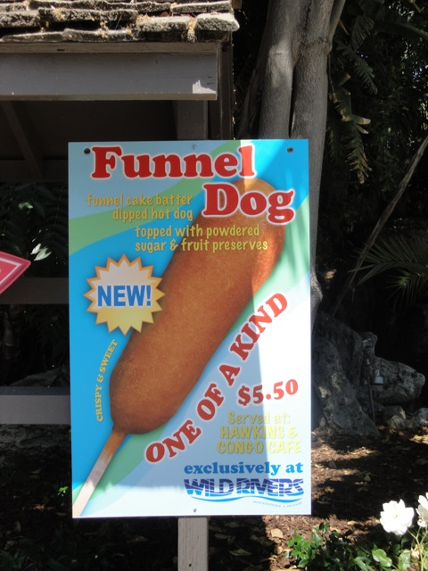
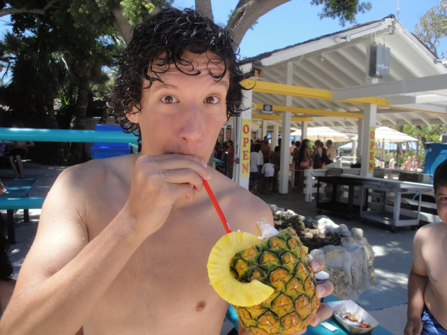

Wild Rivers was a water park located in Irvine, and let me tell you something. It was really freaking awesome!!! Almost every single slide I rode blew my mind. Nothing really seemed dull or ordinary. Every single slide seemed unique, cool, and totally badass. Nothing seemed standard or felt like I rode it at another water park. One cool fact about Wild Rivers was that with the exception of Bazooka Bowls, every water slide there was either a tube slide or made of rubber. So the only ways you could scratch your back was by riding Bazooka Bowl or getting thrown off your tube on Congo River Rapids. And while the park did get crowded, it wasn't nearly as bad as it does over at Raging Waters (Such a shame that there's no alternative anymore). =( I was so impressed with the park after my first visit and the first closing panic that I returned to the park again in 2009 just to make sure the park was as good as I remembered it. And once again, Wild Rivers did not let me down. Everything about the park was just as good as I remembered it. Hell, I went again in 2010 and 2011 because that place was so awesome. I probably would've gone again in 2012, but nope. Fucking Irvine Comp. had to go and tear the fucking park down!!! (This review is also considered a funeral tribute to the park, and I don't have censors in funeral updates or reviews). There were plenty of hidden gems throughout the park. They had a hot tub, boogie boarding wave pools, and their own creation, Funnel Dogs (Hey other parks, pick up on this idea!!!). No wonder they filmed Malcom in the Middle here. I really enjoyed the four visits I had here and while I'm depressed that I can't take anymore, I can at least re-live my four visits through my memories, my updates, and my footage (FUCK YOU IRVINE COMP!!!!!).
The Major Waterslides
There is a link to a review of all the Major Waterslides at Wild Rivers.
Here are the reviews of all the other water slides that were at Wild Rivers. First up, we've had Switzer Falls. Picture the tall straight slide you'd find at your local playground, Multiply the height of it by 4 or 5, make the slide very wet and slippery, and have it land in your backyard pool, and you've got Switzer Falls. Another fun water slide they had is a water slide called Wipeout. One Wipeout, you just sat there waiting to go down, when the ride operator released a shitload of water that makes you take off!!! The course had a lot of helixes and fun stuff like that. And next to Wipeout is Cobra. This slide had some of the craziest laterals you'll ever find on a water slide. If any slide made you go 90 degrees, it was Cobra. Another water slide they had at Wild Rivers would be Whatubee. Wahtubee was a very simple slide. Take your slide to the top of the slide and then it's just three small drops into the splashdown. It wasn't that intense or anything, but it was still a fun slide. And finally, we had Chaos. Chaos was hidden from all the other slides at Wild Rivers as to get to it, you have to walk out away from all the other slides and into the kiddy area and then once you get out of the kiddy area, you just see Chaos just sitting there, right next to some abandoned lake. Chaos was definetly not something worth going out of the way for. There was a reason Wild Rivers isolated Chaos from the rest of their water slides. It's a pretty forceless and pointless waterslide. It was almost like a tube version of Vortex at Raging Waters. And then theres a bunch of kiddy slides in the kiddy area. But we never rode them for obvious reasons.
This should give you a better idea on what Switzer Falls was like.
Dining
At Wild Rivers, they had pretty typical food. Greasy Burgers, Hot Dog, Nachos, Pizza, it's all greasy, it's all typical and it's all at Wild Rivers. I forgot my 2007 meal, but I had a hot dog when I was there in 2009. It was actually pretty good. It was nothing special, but I still thouroughly enjoyed it though. I will admit that Wild Rivers does have some other intersting things to it. They've got a make your own Icee Machine over by the kiddy area. So that gave me a chance to go nuts and create some fucked up Icee flavor that turned out really good. They also had some REALLY good smoothies. They served them in a pineapple and filled it with whipped cream. Though it was really expensive and costed like $10.00. However, it's their other thing that really made them stand out was a little something the people at Wild Rivers liked to call a Funnel Dog. A funnel dog is basically a corn dog, except instead of the hot dog being coated in some corn bread, they get coated in funnel cake batter and deep fried. Now I know this sounds gross, but it kicked ass!! I know this because I tried it in my 2010 visit. Not only does it kick ass, but it's great dipped in jelly (Same goes to French Fries). So yeah, hey other parks!! Bring the Funnel Dog to your park!!!! I'll buy it!!!

Hey other parks!!! Get this!!!

Best smoothie I ever had.
Theming and Other Attractions
Here are the reviews of all the other stuff at Wild Rivers. Well for theming, there was this abandoned lake that looked pretty over by Chaos. And if you're in line for Patriot, you can look at a Ferris Wheel that Irvine has to offer (You can still ride the Ferris Wheel, but why would you want to set foot in Irvine anymore?). But that's about it themeing wise. As for other attractions, Wild Rivers had the typical water park set up of a lazy river, many kids areas, a hot tub, and a wave pool. However, they also had a new upcharge attraction. If you were willing to spend $5.00, you could've gone boogie boarding in a special boogie boarding pool. Oh yeah, I forgot to mention Liquidator in the theiming.
Here you can see the people that were willing to spend $5.00 to Boogie Board.
In Conclusion
Wild Rivers was a COMPLETELY AWESOME WATER PARK!!!!!!! The slides were amazing and unique, the food was good and unique as well, the crowds were under control, and the rubber slides were really nice on your back. I would've TOTALLY recommend you go to this water park if you are in Southern California. It was much better than Raging Waters. This was the real thing that I miss. Screw DejaVu. Screw Big Bad Wolf. This is what we should've saved. I totally miss it. But despite all this sorrow about its loss, there is some good news to report. The owners of Wild Rivers are hoping on re-building the park as Wild Rivers Temecula. YAY!!!!! =) I'm totally looking foreword for the day that gets re-built. But anyways, back to the present. I know I've said it a million times, but I'll say it a million more, because I can not say it enough. FUCK YOU IRVINE COMP!!!! FUCK YOU IRVINE COMP!!!!!! FUCK YOU IRVINE COMP!!!!!! FUCK YOU IRVINE COMP!!!!! FUCK YOU IRVINE COMP!!!!!!!!!!!!!
Tips
*Don't buy any of the houses they're building on the spot.
*Please support Wild Rivers in their attempt to re-locate to Temecula.